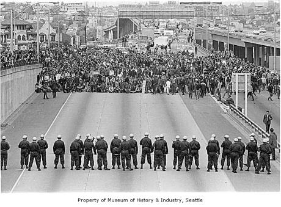

As you learned in the previous lesson, a great challenge faced by liberal democratic governments is the balancing of citizens' freedoms with their security. You analyzed the way the Canadian government has, during times of conflict and civil emergencies, tried to balance these interests.
In this lesson, you will build upon your understanding of this issue by examining more controversial approaches to dissent and the challenges such approaches present to the democratically elected governments at which the dissent is directed.
In this lesson you will answer this question: To what extent should dissent be suppressed in a liberal democracy?
“Congress shall make no law respecting an establishment of religion, or prohibiting the free exercise thereof; or abridging the freedom of speech, or of the press; or the right of the people peaceably to assemble, and to petition the Government for a redress of grievances.” -United States Bill of Rights, Article One
In a liberal democracy, public demonstrations and protests can be very powerful tools for expressing dissatisfaction and creating change in society. These tools have the potential, however, for devolving into acts of violence and rioting.
The dilemma that liberal democracies face is how to balance citizens' rights to expression and peaceful association with the government’s duty to provide law and order. This dilemma deepens when citizens, rightly or wrongly, interpret government actions to manage protest as merely a mechanism for limiting dissent.
The Vietnam War lasted from 1965 to 1973. Employing its strategy of containment, the United States provided military support—including U.S. soldiers—to aid the government of South Vietnam in its struggle with communist North Vietnam.
As the conflict escalated, the American military saw a need for more troops to fight in Vietnam. Accordingly, the U.S. government instituted the draft. Young American men who were not enrolled in college could be conscripted, against their will, to fight in Vietnam.
The conflict in far-off Vietnam became a divisive issue back in the United States. Vietnam was the first “television war.” The nightly newscasts provided video testimony to Americans about the true horror of modern warfare. As civilian casualties in Vietnam mounted, and more of their own soldiers were killed, some Americans began to protest U.S. involvement in the war.
Watch “Anti-War Demonstrators”, a short news report from the era of protest.
Divergent opinions about the Vietnam War made the 1960s and early 1970s in the United States rife with political activism. Anti-war sentiments, a civil rights movement aimed at obtaining true equality for African-Americans, and the assassinations of cultural icons such as Martin Luther King and Robert Kennedy, all provided motivation for street demonstrations and, sometimes, riots.
In the midst of this turmoil in 1968, the Democratic Party held its national convention in Chicago to elect a new leader and discuss the future of the party. While the convention heated up inside with political debate, more than 11 000 anti-war protesters clashed with Chicago police outside the actual convention. The result was the arrest of more than 500 protesters and injuries to over 200 civilians and police officers.
Much of the violence was blamed on the general mismanagement of the situation by Chicago police officials. However, at subsequent trials, eight protest ringleaders known as the Chicago Eight as well as eight Chicago police officers were found guilty of inciting the violence.
Many protests in the 1960s were centered around university campuses. Students, as potential draftees, often saw it in their own best interests to end the war in Vietnam. As well, many young people were challenging the established societal norms and the accepted notions about the role of government in citizens’ lives.
Legal requirements to obtain permits for public marches or to confine protests to designated areas were often viewed by protestors as government tactics designed to isolate them from the public, the media, and the politicians. Ignoring such legal requirements was often seen by demonstrators as legitimate civil disobedience rather than as a flagrant violation of an important law.
For their part, politicians and law enforcement officials were obligated to respond to student protests which could potentially threaten law and order. The nature of that response, however, sometimes led observers to question whether the primary aim was to enforce the law or to discourage political dissent.
"If it takes a bloodbath, let's get it over with. No more appeasement." - Governor of California, Ronald Reagan, on the use of police force in putting down student protests on the campus of Berkely University in 1970
On May 4, 1970, on the campus of Kent State University in Kent, Ohio, approximately 2000 people gathered for a student-led demonstration protesting the American invasion of Cambodia, which is a small country bordering Vietnam. Communist forces often retreated to Cambodia to escape the reach of the U.S. military.
On the basis of vandalism and unrest at Kent in the days leading up to the demonstration, members of the U.S. National Guard were called in to break up the protest. As tensions grew between the protestors and the armed forces, at least one guardsman opened fire. Following suit, a number of other guardsmen discharged their weapons at the protestors. Nine students were wounded and four were killed, including two who were not participants in the protest.
The government justified the shootings by claiming that the soldiers were defending themselves against a large and hostile mob. Subsequent investigations, however, put into question the actions and intentions of the National Guard on the day of the killings.
Ironically, both the protestors and the authorities in the events you've investigated could argue that their actions were motivated by protecting the ideals of liberalism.
Appeasement: giving into the demands of another
Civil disobedience: non-violent protest which takes the form of a refusal to obey a law on the basis that the law is unjust
Draft: compulsory military service; conscription
At what point should the government interfere in a public demonstration to ensure law and order? Is peaceful civil disobedience justifiable? Is violent resistance to governmental authorities?
As you have learned, balancing order and security with individual rights to dissent can be a difficult dilemma to resolve. This was exemplified by both the anti-war protests of the 1968 National Democratic Convention and Kent State in 1970. The events raised important questions regarding the limits of dissent and the government’s use of force in the face of dissent by its own citizens.
What kind of restrictions should governments place on peaceful demonstrations to ensure they remain peaceful? At what point should the government interfere in a public demonstration to ensure law and order? How should governments respond to peaceful civil disobedience? How should governments react to violent resistance from authorities?
These are questions that liberal democratic governments must often answer when confronted with dissent. As a citizen who may at some point either wish to express dissent or perhaps, be affected by dissent, they are important questions for you to consider as well.
Continue your research of the Kent State Massacre. In particular, look into the reasons why the National Guard was called as well as the actions of the protestors leading up to the shootings.